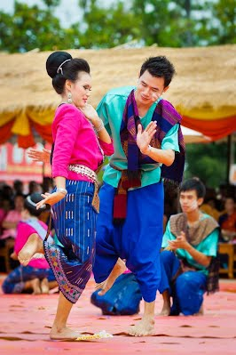

วิถีชีวิต : ชนเผ่าไทญ้อ

ประเพณีและวัฒนธรรมไทญ้อ :ประเพณีการฟ้อนรำไทญ้เพื่อบูชาพระธาตุพนมและพระธาตุท่าอุเทน
ประเพณีการฟ้อนรำไทญ้เพื่อบูชาพระธาตุพนมและพระธาตุท่าอุเทน มีมาตั้งแต่นามนมเมื่อมีงานประจำปีวันออกพรรษา
และวันสำคัญทางศาสนา ชาวไทญ้อได้มีการแสดงความเคารพนับถือสิ่งศักดิ์สิทธิ์โดยการออกมาฟ้อนรำเพื่อบูชาองค์พระธาตุ
เพื่อให้คนในชนเผ่ามีแต่ความสุขความเจริญ
และเป็นสิริมงคลต่อตัวเองและครอบครัวโดยมีการสืบทอดวัฒนธรรมนี้รุ่นต่อรุ่นโดยไม่เสื่อมหายไป
ประเพณีเหยาไทยญ้อคำพี้
ชาวไทญ้อหมู่ 1 ตำบลนาใน อำเภอโพนสวรรค์ จังหวัดนครพนม จะมีที่มาคล้ายกับชาวไทญ้อที่อำเภอท่าอุเทน (ญ้อดั้งเดิม
หรือ ญ้อคลาสสิค ) และแหล่งอื่นๆที่อพยพข้ามแม่น้ำโขงมาจากทางตอนเหนือของลาว
จะต่างกับชาวไทญ้อท่าอุเทนก็แต่เรื่องภาษาสำเนียงการพูด (ในปัจจุบันซึ่งจะคล้ายกับชาวญ้อมหาสารคาม , นาหว้า)
และบางพิธีกรรมที่ไม่เหมือนเลย ทั้งนี้ ก็อาจจะเป็นไปได้ว่า
การผิดเพี้ยนสำเนียงภาษาพูดของชาวคำพี้เกิดการจากการแต่งงานอยู่กินข้ามเผ่าข้ามถิ่น
ต้องกลมกลืนตามสภาพของส้งคมและวัฒนธรรมอื่นที่แข็งกว่าในพื้นที่
" เหยา " เป็นพิธีกรรม ที่มนุษย์ใช้ติดต่อสื่อสารกับภูตผีวิญญาน เพื่ออ้อนวอนขอความช่วยเหลือจากผีตนใดตนหนึ่ง
ตามความเชื่อของชนเผ่ากลุ่มน้อยที่อาศัยอยู่ทางตอนใต้ของจีน ตอนเหนือของลาวเวียตนามและภาคอีสานของไทย
โดยมนุษย์จะสื่อสารกับผี กับวิญญาน ด้วยทำนองดนตรีและการรำฟ้อน
เพื่อวัตถุประสงค์อย่างใดอย่างหนึ่งตามที่เคยปฏิบัติสืบทอดจากบรรพบุรุษ
งานเหยาประเพณีประจำปีของชาวไทญ้อคำพี้ จากการบอกเล่าของชาวคำพี้ หมู่ 1 "
เป็นการเซ่นไหว้บวงสรวงบรรพบุรุษที่ล่วงลับ เพื่อแสดงคารวะคุณ และเพื่อขอความช่วยเหลือให้วิญญาน (
พ่อแม่ปู่ย่าตาทวด) ดูแลคุ้มครองป้องกันชาวคำพี้ให้ปลอดจากโรคภัยใข้เจ็บ ตลอดจนภัยภยันตรายอื่นๆ "
พิธีเหยาประจำปีของชาวไทญ้อ จะทำในวัน 3 ค่ำของเดือน 3 มีกำหนด 2 วัน
ในวันแรกเป็น " วันจม " ผู้หลักผู้ใหญ่ในแต่ละบ้านจะเชิญวิญญานเจ้าที่ผีบ้าน ออกมาชุมนุมที่ " ผำ หรือ ซุ้มผี " ณ
ลานสาธารณะกลางหมู่บ้าน เพื่อทำการเซ่นไหว้ด้วยเหล้า อาหารและขนม โดยพิธีการเหยา จะกระทำโดยหมอเหยาจำนวนกว่าสิบคน
ซึ่งล้วนแล้วแต่เป็นหญิงสูงวัยที่ได้รับการสืบทอดให้เป็นหมอเหยา คาดศรีษะด้วยผ้าสีแดงเป็นเอกลักษณ์
ฟ้อนรำไปตามทำนองเพลงจากเสียงแคนและการให้จังหวะจากกลอง ขบวนของหมอเหยาและนักดนตรีจะฟ้อนแหแหนไปรอบๆ " ผำ " หรือ "
ซุ้มผ๊ " จนจบในตอนเย็น
ในวันสุดท้ายเป็น " วันฟู " หมอเหยาจะเอาใจภูตผีวิญญานด้วยการละเล่นต่างๆ เช่น ขี่ช้างขี่ม้าขี่เสือ
และจบด้วยการพาผีไปอาบน้ำ " สระสนาน " ก่อนที่จะพายเรือพาผีล่องเรือกลับบ้าน
เป็นอันจบสิ้นพิธีกรรมที่เกี่ยวข้องกับผี พิธีกรรมสุดท้ายของงาน ก็คือ การตั้งขบวน " แห่ดอกไม้ส่งเมือง "
เพื่อเอาความดีความงามกลับเข้าสู่บ้านเมือง เมื่อพิธีจบลง หมอเหยาก็จะทำพิธีผูกแขนให้กับผู้ร่วมงาน
ก่อนที่แต่ละฝ่ายจะแยกย้ายกันกลับบ้าน
ตัวต่อเป็นแมลงพิษร้ายแรง
โดยเฉพาะต่อหัวเสือจำนวนมากๆ ต่อยคนเสียชีวิตได้ เพราะพิษเหล็กในรุนแรง
แต่จะดุแค่ไหน ลูกอ่อนของตัวต่อที่อยู่ในรัง ก็ไม่พ้นเป็นอาหารอันโอชะของคนอีสานไปแล้ว
ชนะ วสุรักคะ ข่าวสดนครพนม พาไปชิม "หมกต่อ"
อาหารพื้นบ้านชนเผ่าไทยญ้อ อำเภอท่าอุเทน จังหวัดนครพนม
เป็นสูตรจากนางตวงทิพย์ นครังสุ สมาชิกกลุ่มแม่บ้าน บ้านโพน ตำบลโนนตาล
ต่อแทบทุกชนิดทำรังบนต้นไม้
(ยกเว้น ต่อหลุม อาศัยหลุมโพรงหรือจอมปลวกเก่าทำรังบนดิน ว่ากันว่าดุกว่าต่อทุกชนิด)
แต่ไม่ถูกกับมดแดง สังเกตได้ว่าสัตว์สองชนิดนี้ไม่อยู่ใกล้กัน
วิธีที่จะไปตัดรังเพื่อเอาตัวอ่อน ต้องใส่หมวกกันน็อกปิดหน้า ใส่เสื้อกันฝนสวมถุงมือและแว่นตา
ใช้ฟางหรือผ้าชุบน้ำมันเบนซินมัดปลายไม้ไผ่ แล้วสุมใกล้รังเพื่อให้เกิดควัน
ให้ตัวต่อบินหนีจากรังแล้วตัดเอา
อีกวิธีหนึ่ง ถ้าเดินไปพบตัวต่อ ชาวบ้านจะจับตั๊กแตนมาเสียบไม้ล่อ มันจะตามพวกทิ้งรังมากัดกิน
เหลือรังที่ไม่มีตัวต่ออยู่ ก็ไปตัดเอา
ได้รังต่อมาแล้ว นึ่งให้สุกทั้งรังประมาณ 10-15 นาที จากนั้นเคาะเอาตัวอ่อนออกมา
เตรียมเครื่องปรุงไว้ มีหอมแดงหั่น ต้นหอม ผักนางรัก ผักอีแง่ ตะไคร้ ใบมะกรูด
พริกแห้งหรือพริกสด เกลือ และปลาร้าเล็กน้อย
คลุกเคล้าตัวอ่อนของต่อมกับเครื่องปรุง ตอกไข่ไก่ลงไป 1-2 ฟอง
คลุกกันอีกครั้งจนส่วนผสมจับกันเป็นก้อน ตักใส่ใบตอง
ย่างเตาถ่านประมาณ 20-30 นาที แกะใบตองออก ได้หมกต่อหอมกรุ่นรสแซบ
หมกต่อหาชิมได้ค่อนข้างยาก เพราะเป็นอาหารของชาวไทยญ้อ พื้นถิ่นอีสาน มาแนะนำให้รู้จักกันเท่านั้น
ถึงอยากจะลอง แต่ต้องยุ่งกับแมลงมีพิษ ไม่เชี่ยวชาญชำนาญจริงๆ ไม่ควรทำ